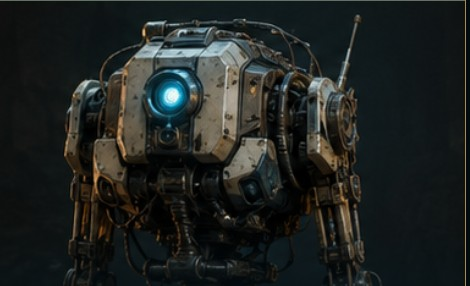
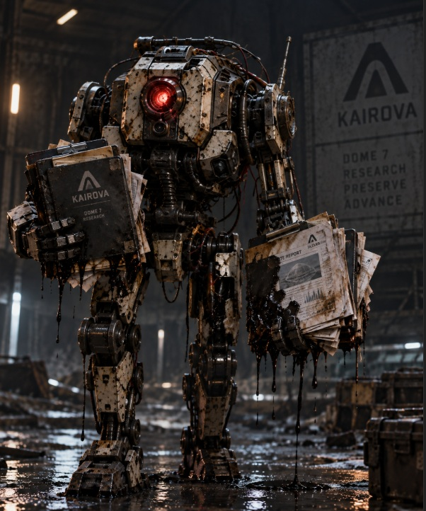
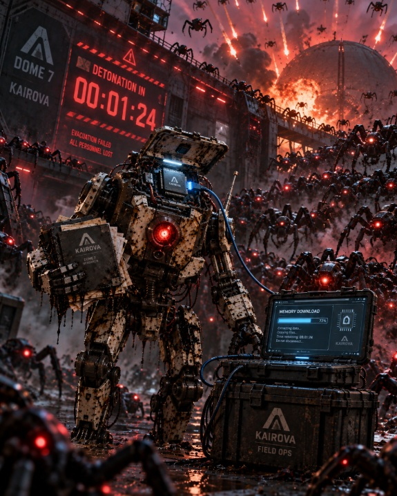
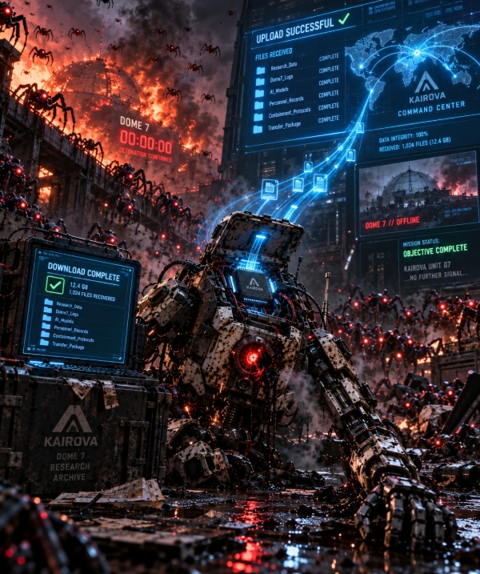

CS-110 // Expedition Report
Recover reports to verify occupants.
Look throughout location for any identifiable occupant markers
Scene 01 // Arrival
What did your character expect to find?

Chappie and his crew seek to find details and identifiers throughout their mission to help identify occupants that did not pass intial scans.
Scene 02 // Discovery
What changed the mission?

Chappie finds reports, details about the unidentified occupant, but the atmospher and journey throughout his search have made his exterior fall apart and make the reports of the occupant unreadable.
Scene 03 // Outcome
What should Kairova do next?

Chappies internal memory chip captures all reports and saves them, but now the mission timer is expiring and the planet is about to explode and the robot spider inhabitants threaten to finish off chappie before his success in downloading the files
Scene 04 // fin
did you fail?

successful download of files recovered from Chappie's internal memory, chappie dies on his mission, but reports to identify occupant that posed a threat is successfully uploaded to command center.